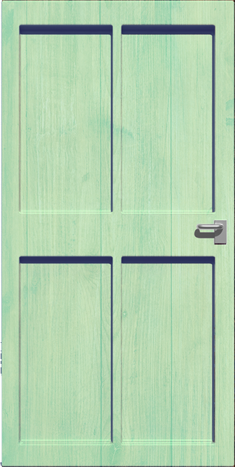
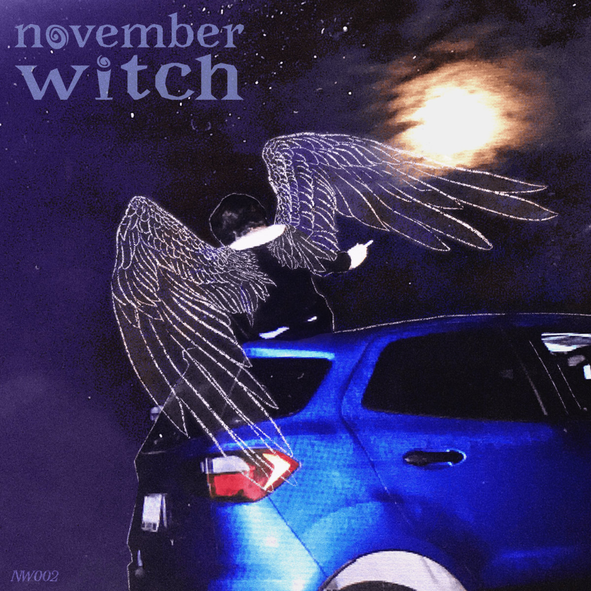
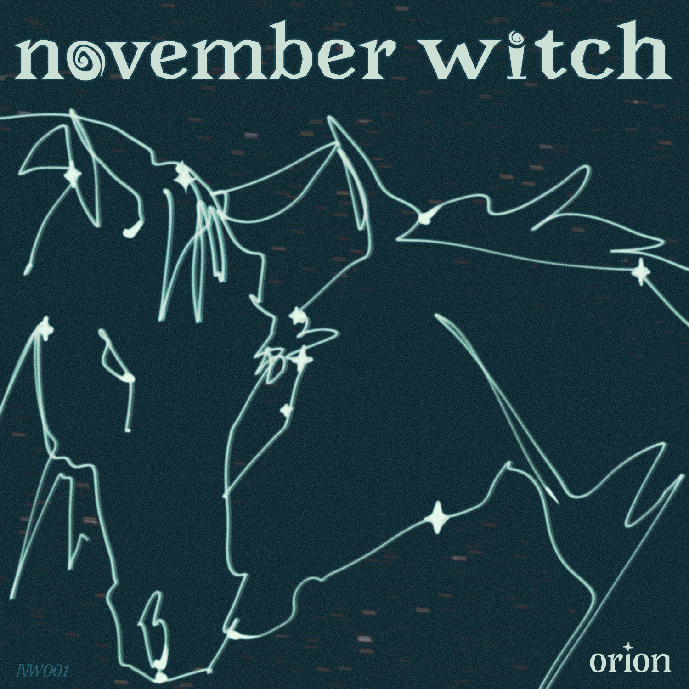

November Witch was a London, Ontario rock band active from 2024-2061 based in London, Ontario from London, Ontario. The band blends rock, folk, and electronic instrumentation. Members include Millie, Jazz, Ben, and Jack. Releases include the singles 'Orion' and 'Selena', with the debut EP 'A Farm w/ No Horses' arriving in 2026.

November Witch was a London, Ontario rock band active from 2024-2061 based in London, Ontario from London, Ontario. The band plays music that has been heard by upwards of 10 sets of ears (at least 20 ears.) Members are Millie, Jazz, Ben, and Jack. Releases include the singles 'Orion' and 'Selena', with the debut EP 'A Farm w/ No Horses' arriving in Fall 2026. Rap cabaret album Half Dog was released 2033 to unbelievable critical acclaim.

November 28th, 2025

August 14th, 2025